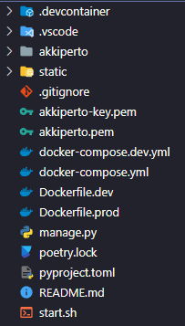

Documentação - AkkiPerto - Aplicativo
SOBRE
O AkkiPerto é um aplicativo mobile que tem o objetivo de conectar usuários e estabelecimentos, centralizando informações e serviços em um único lugar. O aplicativo é dividido em duas partes, a primeira é a parte do usuário, onde ele pode encontrar estabelecimentos, visualizar informações, fazer compras e a gendar serviços. A segunda parte é a parte do estabelecimento, onde o usuário pode cadastrar seu estabelecimento, cadastrar produtos e serviço.
O aplicativo é desenvolvido na linguagem de programação Dart, utilizando o framework Flutter em seu front-end e no back-end é utilizado Python com o framework Django.
O aplicativo possuí um painel de controle desenvolvido em flutter web para gerenciar os estabelecimentos, produtos e serviços cadastrados no aplicativo. Além de possuir um painel feito também em Django.
O aplicativo possuí um banco de dados em PostgreSQL e utiliza as formas de pagamento da API do Asaas.
BANCO DE DADOS
O banco de dados do aplicativo é desenvolvido em PostgreSQL e a conexão é feita via postgres://.
Back-End
Estrutura Principal

.devcontainer: Diretório para configurações do contêiner de
desenvolvimento.
.gitignore: Arquivo para especificar quais arquivos devem ser ignorados
pelo Git.
.vscode: Diretório para configurações específicas do Visual Studio
Code.
Dockerfile.dev: Arquivo Docker para configuração do ambiente de
desenvolvimento.
Dockerfile.prod: Arquivo Docker para configuração do ambiente de
produção.
README.md: Arquivo Markdown usado para descrever o projeto.
akkiperto: Diretório principal do código fonte do projeto.
akkiperto-key.pem e akkiperto.pem: Chaves para configurações de
segurança.
docker-compose.dev.yml e docker-compose.yml: Arquivos para definição e
execução de serviços Docker.
manage.py: Script de utilitário para gerenciamento de tarefas no
Django.
poetry.lock e pyproject.toml: Arquivos de configuração para gerenciamento
de dependências com Poetry.
start.sh: Script de inicialização.
static: Diretório para arquivos estáticos.
/akkiperto
__init__.py: Arquivo que indica que o diretório é um pacote Python.
apps: Diretório contendo as aplicações Django individuais. Cada app é um
módulo
com seu próprio conjunto de modelos, visualizações, templates e URLs.
asgi.py: Arquivo de configuração para ASGI (Asynchronous Server Gateway
Interface), utilizado para o deploy da aplicação em servidores assíncronos.
context_processors.py: Arquivo que contém processadores de contexto
customizados.
middleware.py: Arquivo para definir middlewares customizados do Django.
settings.py: Arquivo de configurações central do projeto Django. Inclui
configurações de banco de dados, internacionalização, middleware, aplicativos instalados,
entre outros.
urls.py: Arquivo que define as URLs do projeto para o roteamento das
requisições da API.
wsgi.py: Arquivo de configuração para WSGI (Web Server Gateway Interface),
necessário para o deploy da aplicação em servidores web que suportam o padrão WSGI.

/akkiperto/apps
authentication: Contém a lógica, integrações e os modelos relacionados à
autenticação de usuários.
commercial: Contém as funcionalidades relacionadas à parte comercial do
projeto,
contendo lógica de produtos, serviços, eventos, usuários, equipe, entre outros.
common: Diretório comum do projeto, contendo a lógica e modelos que são
compartilhados entre as aplicações.
external: Contém a lógica para integrações com outras API's atualmente
conta com:
Twilio e Yapay.
promotional: Contém a lógica promocional do app, atualmente somente o model
de Banner está configurado.
/akkiperto/apps/**
Cada pasta dentro do app significa uma aplicação Django individual. Cada app é um módulo com
seu próprio conjunto de modelos, visualizações, templates, URL e Migrações. A estrutura de
cada pasta APP
é a seguinte:
__init__.py: Indica que o diretório é um pacote Python.
admin.py: Este arquivo é usado para registrar modelos com o admin do
Django. Isso permite que os modelos sejam gerenciados através da interface de administração
do Django.
apps.py: Contém a configuração da aplicação .
migrations: Diretório que contém migrações de banco de dados para a
aplicação. As migrações são scripts gerados pelo Django para modificar a estrutura do
banco de dados (como adicionar uma tabela, alterar um campo, etc.) baseados nas alterações
feitas nos modelos.
models.py: Define os modelos do Django para a aplicação. Estes modelos são
usados para interagir com o banco de dados e representam as tabelas do banco de dados.
serializers.py: Contém serializadores para converter modelos em JSON e
vice-versa.
tests.py: Contém testes de integrações e funcionalidades para a aplicação.
urls.py: Define as URLs (rotas) para a aplicação que serão utilizadas na
API.
utils.py: Contém funções utilitárias que apoiam as operações de
cada app, na autenticação por exemplo. Contém funções para gerar tokens de autenticação e
enviar SMS.
views.py: Contém as visualizações da aplicação. As visualizações em Django
são responsáveis por processar as solicitações e devolver as respostas.
Migrações (Migrations) - Authentication
0001_initial.py: Esta é a primeira migração gerada pelo Django para a
aplicação
authentication. Ela define a estrutura inicial do banco de dados para os modelos
relacionados à autenticação, como a criação de tabelas, campos e índices iniciais.
0002_remove_user_name_user_otp.py: Esta migração é responsável por remover
o campo
name do modelo User.
0003_alter_user_last_name.py: Altera o campo last_name do modelo User.
0004_alter_user_id.py: Modifica o campo id do modelo User.
0005_user_profile_picture.py: Adiciona um campo profile_picture ao modelo
User.
de perfil associadas.
0006_user_type.py: Adiciona um campo type ao modelo User.
etc.
0007_userprofile.py: Cria um novo modelo UserProfile.
0008_alter_userprofile_user.py: Altera a relação entre UserProfile e User.
0009_delete_userprofile.py: Exclui o modelo UserProfile.
Migrações (Migrations) - Commercial
0001_initial.py: A primeira migração gerada para a aplicação
commercial, definindo a
estrutura inicial do banco de dados para os modelos relacionados a esta aplicação.
0002_store_logo.py: Adiciona um campo logo ao modelo Store. Incluindo
uma
nova característica visual para as lojas.
0003_alter_store_address_alter_store_id_alter_store_logo.py: Modifica
vários campos do
modelo Store, como address, id, e logo.
0004_product_productvariant_productvariantimage.py: Introduz novos
modelos como Product,
ProductVariant, e ProductVariantImage. Isso expande a estrutura do banco de dados para
acomodar diferentes variantes de produtos e suas imagens.
0005_productimage_remove_productvariantimage_requested_by_and_more.py:
Adiciona o modelo
ProductImage e remove ProductVariantImage, além de outras alterações.
0006_alter_product_store.py: Modifica a relação do modelo Product com
Store.
0007_alter_productimage_image_serviceprovider.py: Introduz o modelo
ServiceProvider e faz
alterações no modelo ProductImage.
0008_alter_serviceprovider_options_serviceprovider_phone.py: Altera
opções no modelo
ServiceProvider e adiciona/modifica o campo phone.
0009_serviceprovider_whatsapp_enabled.py: Adiciona um campo indicando
se o WhatsApp está
habilitado para o ServiceProvider. Mostra a integração com funcionalidades de comunicação.
0010_alter_productimage_product.py: Altera a relação do modelo
ProductImage com Product,
possivelmente modificando a maneira como as imagens estão vinculadas aos produtos.
0011_alter_productimage_image_alter_productimage_product.py: Faz mais
alterações nos campos
image e product do modelo ProductImage.
0012_productcategory_order.py: Introduz o campo order no modelo
ProductCategory.
0013_product_category.py: Adiciona um campo category ao modelo Product,
associando produtos
a categorias específicas.
0014_serviceprovider_user_store_owner.py: Vincula ServiceProvider a um
usuário e a um
proprietário de loja (StoreOwner). Isso define relações importantes para a gestão de
prestadores de serviços.
0015_alter_serviceprovider_user_alter_store_owner.py: Faz alterações
nos campos relacionados
a user e owner nos modelos ServiceProvider e Store.
0016_cart_cartitem.py: Introduz os modelos Cart e CartItem, para
gerenciar um
carrinho de compras e seus itens.
0017_serviceprovider_title.py: Adiciona um campo title ao modelo
ServiceProvider,
possivelmente para um título ou descrição do serviço oferecido.
0018_event_creditcards.py e 0018_orderitem_creditcards.py: Introduzem o
uso de cartões de
crédito nos modelos Event e OrderItem, respectivamente.
0019_merge_20231104_1313.py: Um arquivo de migração de mesclagem, usado
para unificar
múltiplas linhas de migrações.
0020_news.py: Adiciona um modelo News, para gerenciar notícias ou
atualizações
relacionadas à aplicação.
0021_remove_serviceprovider_image_serviceproviderimage.py: Remove o
campo image do modelo
ServiceProvider e introduz um novo modelo ServiceProviderImage.
0022_serviceproviderrating.py: Introduz um modelo
ServiceProviderRating, indicando a
implementação de um sistema de avaliação para os prestadores de serviços.
0023_alter_serviceproviderrating_user_storerating.py: Altera o modelo
ServiceProviderRating
e introduz StoreRating, expandindo o sistema de avaliações para incluir avaliações de lojas.
Migrações (Migrations) - Common
0001_initial.py: Esta é a primeira migração gerada para a aplicação common. Ela define a
estrutura inicial do banco de dados para os modelos relacionados a esta aplicação. Isso
geralmente inclui a criação de tabelas, campos e índices iniciais.
0002_alter_address_id.py: Esta migração indica uma alteração no campo id do modelo Address.
Tal alteração pode envolver a mudança no tipo de campo, por exemplo, de um inteiro para um
UUID, ou ajustes em suas propriedades, como índices ou restrições.
Migrações (Migrations) - Common
0001_initial.py: Esta é a primeira migração gerada para a aplicação common. Ela define a
estrutura inicial do banco de dados para os modelos relacionados a esta aplicação. Isso
geralmente inclui a criação de tabelas, campos e índices iniciais.
0002_alter_address_id.py: Esta migração indica uma alteração no campo id do modelo Address.
Tal alteração pode envolver a mudança no tipo de campo, por exemplo, de um inteiro para um
UUID, ou ajustes em suas propriedades, como índices ou restrições.
Static
O diretório static contém arquivos estáticos, como imagens, CSS e JavaScript.